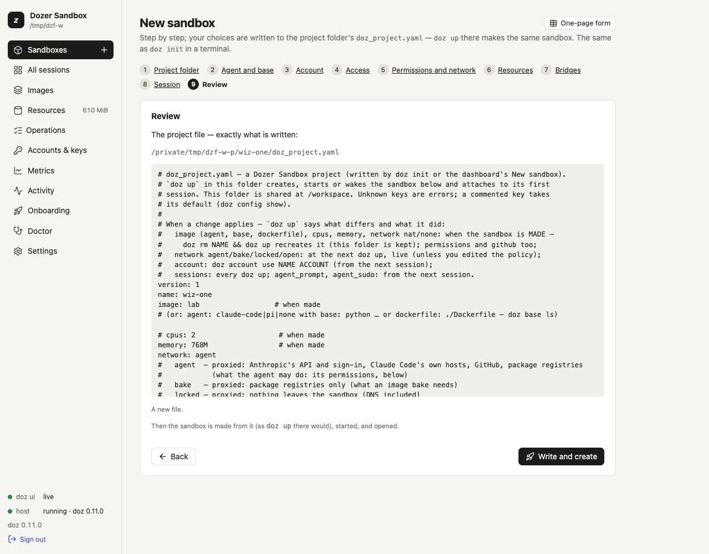

Chapter 4
Projects
A project is a folder with a doz_project.yaml file in it.
On this page
A project is a folder with a doz_project.yaml file in it. The file describes the folder's sandbox — which agent, how much memory, what it may reach, which sessions to start — and doz up in that folder creates, starts or wakes exactly that sandbox, with the folder shared at /workspace. Use projects when you work on the same code day after day, or want everyone on a team to get the same sandbox from a checkout.
Concepts#
- The folder is the workspace. A project's sandbox always shares its own folder at
/workspace, live: what the agent writes is on your Mac at once, and the other way round. - The file holds choices, never secrets. You can commit it. Credentials come from your accounts, which stay on your Mac.
- Some choices are made when the sandbox is made. Its image, CPUs and memory — and a
natornonenetwork — are the virtual machine's make-up. Changing them in the file affects a new sandbox only;doz uptells you so. Other keys apply at once or from the next session (below). - Your projects folder is not a project. The setting
defaults.projects_dir(~/dozer-sandbox-workspaces) is where Quick add, New sandbox anddoz newmake a folder for each new sandbox that has none of its own —claude-sandbox,claude-sandbox-2, … — with nodoz_project.yaml. Rundoz initin one of them to make it a project. Change the folder in Settings › Choose… or withdoz config set defaults.projects_dir DIR(The quickest way).
Make a folder a project#
cd ~/code/my-app
doz initOn a terminal doz init walks the same steps as the dashboard's New sandbox wizard, each saying Step N of 10:
- Project folder — the folder, and the sandbox's name (suggested from the folder's);
- Agent and base — the image (suggested from the setting
defaults.image); - Account — for an agent:
default(the store's),none, or an account; - Access — the same questions as onboarding's Access step, for this sandbox: GitHub as you (
off,readorpush; the default is the settingdefaults.github) and SSH agent forwarding. What you turn on is confirmed live (asdoz accessdoes); one that can't be confirmed can be skipped — kept, not confirmed — turned off, or checked again. Where the GitHub token comes from is this Mac's choice (doz access set), not the project's; - Workspace rules — onboarding's description of
.dozignoreand.dozreadonly, what the folder already has (each rule file, how many patterns and its first lines — or none — the folder is shared as is, with how to add one), and this sandbox's choice: Lock or Hide (ignore_modein the file; the default is the settingworkspace.ignore_mode). See Workspace rules; - Permissions and network — the network, and what the agent may do (
standard,locked,open, or changes like+web,-error-reports); - Resources — CPUs and memory (the disk is the image's own; it isn't set per sandbox);
- Bridges — the clipboard, links in your browser, workspace files opened on the Mac;
- Session — tmux, and the agent's sudo;
- Review — the file it will write, and Write?
Each question shows its default; Enter keeps it. It sets this Mac up first if it never was. The file lists every key: what you chose is set, and what you left at its default stays commented out — it follows your settings.
In a folder that already has a project file, doz init on a terminal starts from that file, and replaces it only after showing what changes (- the line there now, + the new one) and asking.
doz init ~/code/other --name other --image python-claude-code --memory 4G --yes
doz init ~/code/api --yes --network agent --permissions +web --github read --tmux
doz init --force # rewrite an existing doz_project.yaml without asking| option | what it does |
|---|---|
DIR | The folder (default: the current one; made if missing). |
--name · --image · --cpus · --memory · --network · --permissions · --account | Answer those questions up front. |
--github · --ssh-agent · --ignore-mode · --clipboard · --browser-bridge · --open-files · --tmux · --agent-sudo | The same, for access, workspace rules, bridges and the session (--no-tmux, --no-agent-sudo too). |
--yes | Ask nothing: every default. --json and no terminal ask nothing too. |
--force | Rewrite an existing file without asking. |
Use it#
cd ~/code/my-app
doz upWith no sandbox name, in a project folder, doz up:
- creates the sandbox if it doesn't exist (the folder becomes its
/workspace); - starts it, or wakes it;
- starts the file's
sessions— the first one attached to your terminal, the others in the background; - brings the sandbox's own settings into line with the file (its agent prompt, sudo, clipboard, browser bridge, opening files, tmux), and says what it changed.
Options you give up win over the file's, for a new sandbox: doz up --memory 8G. doz up -d does it all without attaching. When you detach (Ctrl-] twice), the line printed names the shortest way back — in the project folder that is just doz up.
In the dashboard#
Sandboxes › New sandbox is a wizard with the same ten steps, in a window over the dashboard. It starts with the project folder: a new folder in your projects folder, or a folder you have (type it, or Choose… in your Mac's folder picker). If that folder has a project file, the wizard starts from it.
- Every step is filled in from your settings (or from the file). The steps run across the top, a check on each one done (hover it for your answer) — click one to go back to it. Back and Next (at the bottom, always in view) move between steps, Enter is Next, Alt+← / Alt+→ too, and Skip to review jumps to the end keeping every default.
- ✕ or Escape closes the wizard; once you have chosen something it asks first. The browser's Back closes it too and keeps your choices — Forward, or New sandbox again, picks up where you were.
- Workspace rules lists the folder's
.dozignore/.dozreadonlyas they are now; add or edit one on the Mac and press Look again. - Review lists your choices and says what will happen; The file, exactly as written unfolds the
doz_project.yamlit will write. Write and create writes it into the folder, makes the sandbox from it — asdoz upthere would — starts it, sets up its tools and opens its page. A folder that already has a file asks first, showing what changes. - One-page form (top right) is the old single form, for an isolated sandbox with no project file. Quick add stays the no-questions way in (The quickest way).

A project's sandbox is an ordinary sandbox there: it appears under Sandboxes, and its page shows its workspace folder.
doz_project.yaml reference#
The file may also be called doz_project.yml. A folder with both is an error — doz up, doz init and the dashboard all say so; keep one.
version: 1
name: webapp # the sandbox
image: claude-code # or: agent + base, or agent + dockerfile (below)
cpus: 4
memory: 4G
network: agent # agent, bake, locked, open, nat, none
permissions: "+web" # standard, locked, open, or changes on Standard
account: default # default, none, or an account name
sessions: # what doz up starts; the first is attached
- claude # the image's own session
- name: server # a session of your own
command: npm run dev # split on spaces, no shell — or a list: [npm, run, dev]
agent_prompt: | # this project's own lines for the agent
The tests run with `make test`.
agent_prompt_mode: append # or replace
agent_sudo: true
clipboard: write # or off
browser_bridge: on # or off
open_files: on # or off
ssh_agent: off # or on
github: off # read or push: git and gh signed in as you
tmux: false # or true
workspace_view: on # off: share the folder directly (programs in it lose their folder at a wake)| key | value | default | when a change applies |
|---|---|---|---|
version | 1 | — | — |
name | the sandbox: 1–40 of a-z 0-9 - | the folder's name | — |
image | claude-code, pi, lab, a base × agent image (python-claude-code, go-pi, debian, …) or a template | defaults.image | when the sandbox is made |
agent | claude-code, pi or none — instead of image, with base or dockerfile | claude-code | when made |
base | a recommended base: node, python, go, rust, java, ruby, dotnet, debian, ubuntu, alpine | node | when made |
dockerfile | your own Dockerfile, relative to the folder or absolute (see Images and bases) | — | when made |
cpus | 1–64 | defaults.cpus (2) | when made |
memory | 2G, 512M or MiB, 256 MiB – 256 GiB | per image (settings) | when made |
network | agent, bake, locked, open, nat, none | per image | agent/bake/locked/open: at the next doz up, live (unless you edited the sandbox's permissions since); nat/none: when made |
permissions | what the agent may do on a network with permissions (agent, locked, open): standard, locked, open, or changes on Standard like +web,-error-reports (or a list); see What the agent can do | defaults.permissions (standard) | when made (later: doz net allow / doz net deny) |
account | default, none or an account name | follow the store's default | run doz account use NAME ACCOUNT |
sessions | a list of session names, or {name, command} — at most 16 | the image's own session | every doz up |
agent_prompt | text, at most 16 KiB | — | the next session |
agent_prompt_mode | append or replace | append | the next session |
agent_sudo | true or false | sandbox.agent_sudo (true) | the next session |
clipboard | write or off | sandbox.clipboard (write) | at once |
browser_bridge | on or off | sandbox.browser_bridge (on) | at once |
open_files | on or off | sandbox.open_files (on) | at once |
ssh_agent | on or off | sandbox.ssh_agent (off) | at once |
github | off, read or push (GitHub as you) | off | when made (later: doz net allow NAME github:as-you) |
tmux | true or false | sessions.tmux (false) | the next session |
The schema is closed: an unknown key, a key given twice, a wrong type or a value out of range is an error that names the line. One YAML document, no anchors or aliases, at most 64 KiB.
When you change the file#
doz up compares the file with the sandbox and says each difference and what it did, for example:
[doz] cpus 2 → 4 in doz_project.yaml: applies only when the sandbox is made — doz rm webapp && doz up recreates it (this folder is kept)
[doz] network agent → locked in doz_project.yaml: applied now (live — the next connection is judged by it)
[doz] clipboard off in doz_project.yaml — applies at once (the UI re-reads it)To remake a sandbox with new make-up, doz rm NAME then doz up. Your folder is never touched; the agent's history on the sandbox's state disk goes with the sandbox, so take a duplicate with --copy-state first if you want to keep it.
Limits#
- One sandbox per project file. Several folders can each have their own.
- The sandbox's name must be unique in the store. Two checkouts of the same project on one Mac need different
names. permissionsandgithubneed a network with permissions (agent,lockedoropen— or an image whose default network is one): withbake,natornonethe file is refused, and says why.- The disk is the image's own: there is no disk-size key.
Troubleshooting#
| symptom | what to do |
|---|---|
| "unknown key …" | The key isn't in the table above (check its spelling). |
doz up says "which sandbox?" | There's no doz_project.yaml in this folder: cd into the project, or doz init. |
| "NAME was made from …, not this folder's doz_project.yaml — using it anyway" | Two projects use the same name, so they share one sandbox. Rename one. |
| A change in the file didn't apply | doz up prints when each change applies; image, CPUs and memory need a new sandbox. |
Edit this page on GitHub · Chapter 4 of 25